Use this page for PPT. Earlier auto-selected examples are quarantined under DO_NOT_USE_auto_generated_old because several cutouts were wrong or too tiny for presentation.
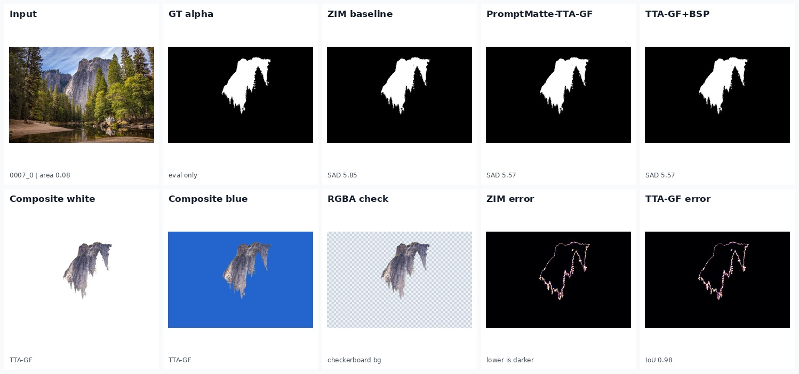
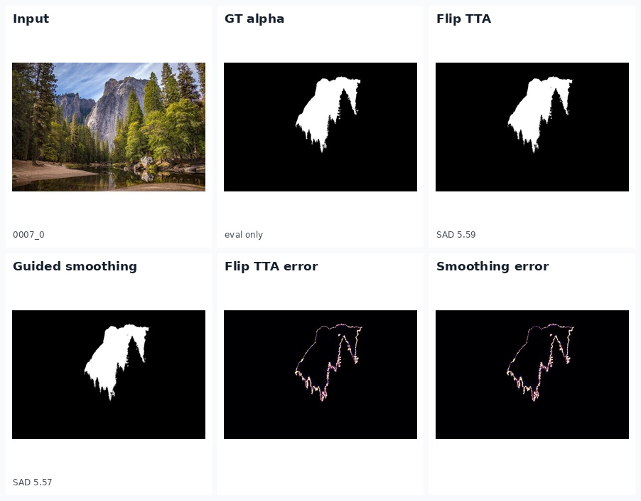
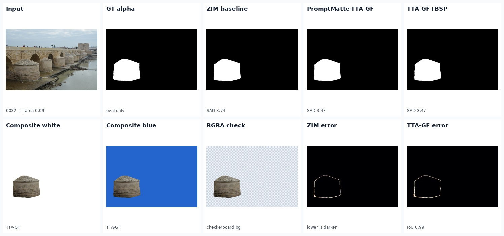
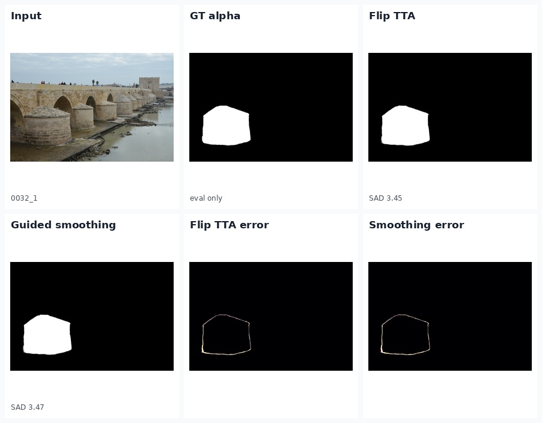
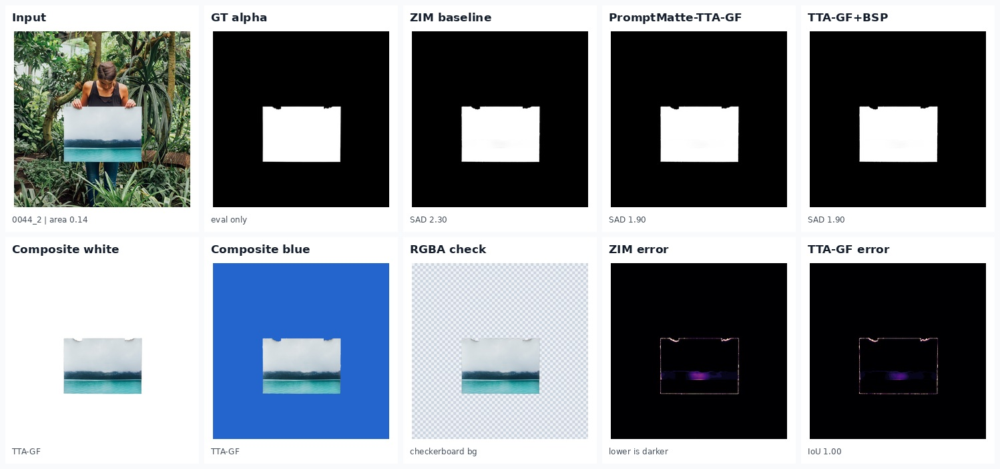
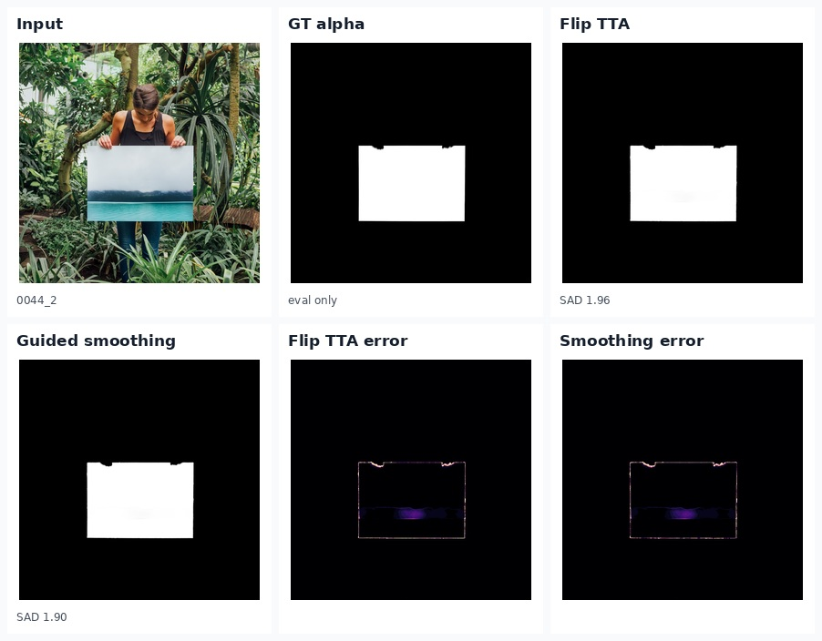
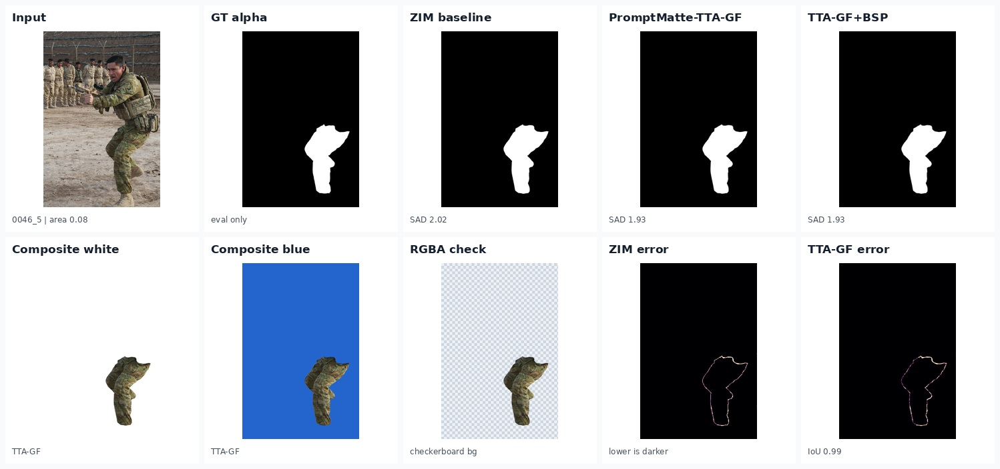
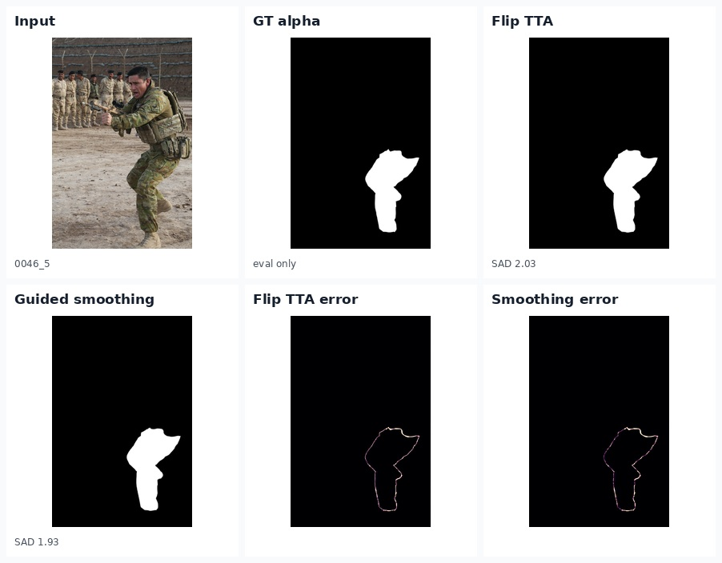
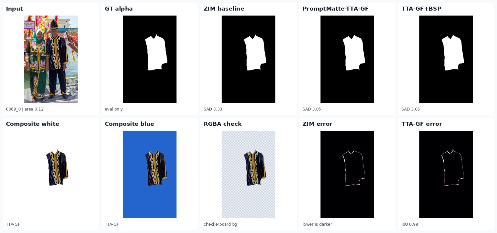
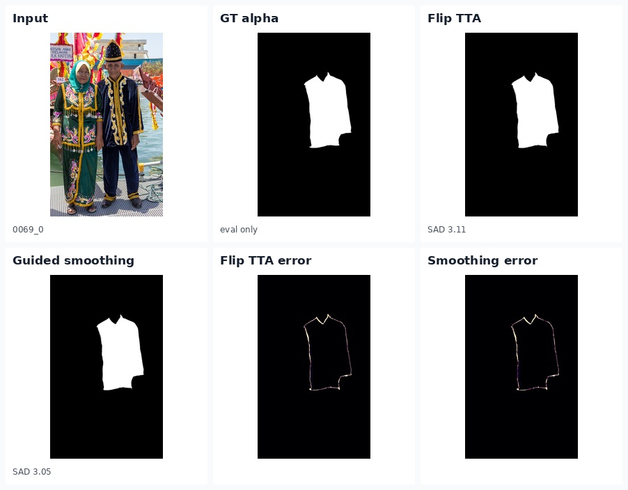
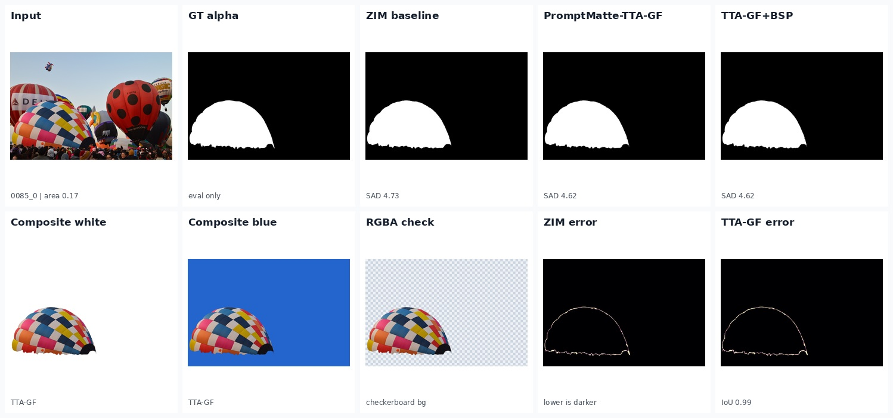
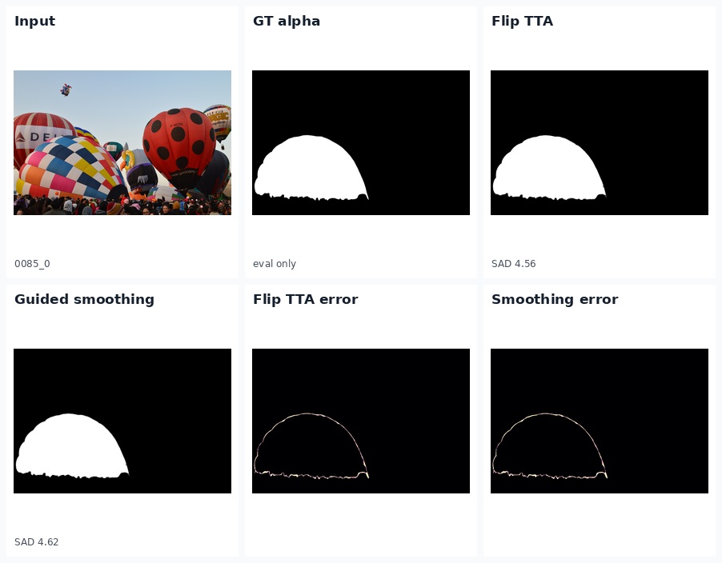
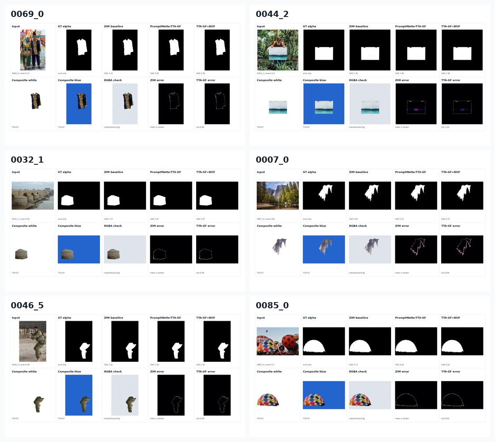
Additional gated candidates remain in PPT_SAFE_USE_THESE; inspect manually before use.